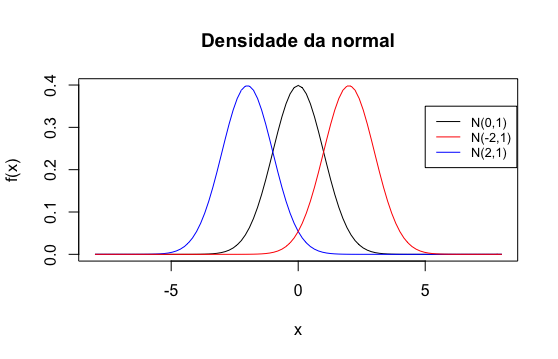
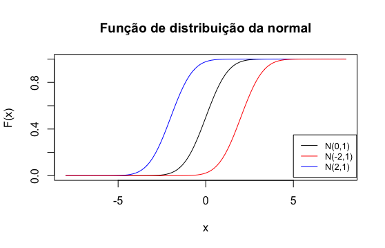
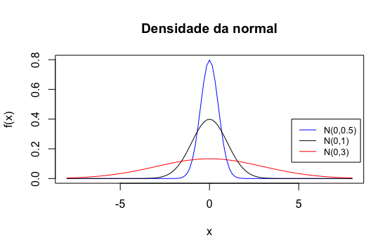

Capítulo 9 Modelos de distribuições contínuas
9.1 Distribuição uniforme contínua
Definição 9.1 Dizemos que a variável aleatória \(X\) tem distribuição uniforme contínua no intervalo \([a,b]\), se sua função de densidade é \[ f(x) = \begin{cases} \frac{1}{b-a} & a \leq x \leq b, \\ 0, & \text{caso contrário} \end{cases} \] Notação: \(X\sim\) Uniforme Contínua(\([a,b]\))
A função de distribuição de uma variável uniforme contínua no intervalo \([a,b]\) é
\[ F(x) = \begin{cases} 0, & x<a\\ \frac{x-a}{b-a}, & a\leq x \leq b\\ 1, & x \geq b \end{cases} \]
Proposição 9.1 Se \(X \sim\) Uniforme Contínua(\([a,b]\)), então \[ E(X) = \frac{a+b}{2} \text{ e } Var(X) = \frac{(a-b)^2}{12} \]
Exemplo 9.1 A eficiência \(X\) de um certo componente eletrico é modelada por uma variável aleatória contínua com distribuição uniforme no intervalo \([0,100]\). Qual a probabilidade de que \(X\)
esteja entre 60 e 80 unidades
seja menor que 90 unidades
Solução. Seja \(X\): eficiencia do componente eletrico
\(P(60 \leq X \leq 80) = F(80) - F(60) = 0,20\).
\(P(X\leq 90) = F(90)=0,90.\)
9.2 Distribuição exponencial
Definição 9.2 Dizemos que a variável aleatória \(X\) tem distribuição exponencial de parâmetro \(\lambda > 0\) se, sua função de densidade é \[ f(x) = \begin{cases} \lambda e^{-\lambda x} & x \geq 0 \\ 0, & \text{caso contrário} \end{cases} \] Notação: \(X\sim\) Exponencial(\(\lambda\)).
A função de distribuição de uma variável exponencial de parâmetro \(\lambda\) é
\[\begin{align*} F(x) = \begin{cases} 1-e^{-\lambda x}, & x \geq 0 \\ 0, & \text{caso contrário} \end{cases} \end{align*}\]
Proposição 9.2 Se \(X \sim\) Exponencial(\(\lambda\)), então \[ E(X) = \frac{1}{\lambda} \text{ e } Var(X) = \frac{1}{\lambda^2} \]
Exemplo 9.2 O tempo de atendimento, em minutos, a um cliente em um serviço de informação de uma biblioteca é uma variável aleatória contínua com distribuição exponencial, com um tempo médio de atendimendo de 5 minutos. Qual a probabilidade de que o atendimento a um cliente dure mais de 10 minutos ?
Solução. Seja \(X\): Tempo de atendimento, em minutos, a um cliente em um serviço de informação de uma biblioteca \(\sim\) Exponencial(\(\lambda = 1/5\)).
\[ P(X > 10) = 1- P(X\leq 10) = 1-F(10) = e^{-10/5} = 0,1353.\]
9.3 Distribuição normal
A distribuição normal é a distribuição contínua utilizada com mais frequência nas aplicações da teoria da probabilidade. Ela constitui a base para o desenvolvimento de muitos dos métodos da Estatística.
Definição 9.3 Dizemos que a variável aleatória \(X\) tem uma distribuição normal de parâmetros \(\mu \in \mathbb R\) e \(\sigma^2>0\), se sua função de densidade é \[ f(x) = \frac{1}{\sqrt{2\pi} \sigma} e^{-(x-\mu)^2/2\sigma^2}, \; x \in \mathbb R \] Notação: \(X\sim\) N(\(\mu\),\(\sigma^2\)).
A distribuição normal também é conhecida como a distribuição de Laplace-Gauss. No seguinte gráfico apresentamos várias curvas da normal para diferentes valores dos parâmetros \(\mu\) e \(\sigma^2\).

Proposição 9.3 Se \(X\sim\) N(\(\mu,\sigma^2\)), então \[ E(X) = \mu \text{ e } Var(X) = \sigma^2. \]
A função de distribuição da normal é
\[ F(x) = \frac{1}{\sqrt{2\pi}\sigma} \int_{-\infty}^x e^{-(t-\mu)^2/2\sigma^2} dt, \; x\in \mathbb R. \]

9.3.1 Propriedades da distribuição normal
A densidade \(f\) é simétrica em torno de \(\mu\), isto é: \(f(\mu+ x) = f(\mu - x)\) para qualquer \(x\in \mathbb R\).
Para qualquer \(x\in\mathbb R\), \(F(\mu + x) + F(\mu-x) = 1\).
\(x=\mu\) é o único ponto de máximos de \(f\), e o valor máximo é \(\frac{1}{\sigma \sqrt{2\pi}}\).
\(f\) tem dois pontos de inflexão: \(x=\mu - \sigma\) e \(x=\mu + \sigma\).
\(\lim_{x\to \pm \infty} f(x) = 0\).
O desvio padrão \(\sigma\) determina a largura da curva da normal: quanto maior \(\sigma\) tem-se uma curva mais larga e achatada, dito de ooutra maneira, quanto maior \(\sigma\) menos concentrada perto de \(\mu\) a densidade é (veja a figura a continuação).

9.3.2 A distribuição normal padrão
A distribuição normal padrão resulta quando os parâmetros de uma distribuição normal correspondem a \(\mu = 0\) e \(\sigma^2 = 1\). Ou seja, dizemos que a variável \(X\sim\) N(0,1) se sua função de densidade é
\[ \phi(x) = \frac{1}{\sqrt{2\pi}} e^{-x^2/2}, \; x\in \mathbb R. \]
A função de distribuição de uma normal padrão é denotada pela letra grega \(\Phi\) maiúscula e é dada por
\[ \Phi(z) = \frac{1}{\sqrt{2\pi}} \int_{-\infty}^z e^{-t^2/2} dt, \; x\in\mathbb R. \]
Observação. Os valores de \(\Phi(z)\) não são possíveis de obter analiticamente, no entanto, podem ser aproximados numericamente e encontram-se tabelados para os valores de \(z\geq 0\). Note que se \(z<0\), podemos calcular \(\Phi(z)\) através de \(\Phi(z) = 1-\Phi(-z)\).
A continuação apresentamos alguns resultados úteis para o cálculo de probabilidades envolvendo uma distribuição normal.
Proposição 9.4 Seja \(X\) uma variável aleatória com média \(\mu\) e variância \(0<\sigma^2<\infty\). Se \[ Z = \frac{X-\mu}{\sigma}, \] então \(E(Z) = 0\) e \(Var(Z)=1\).
Proposição 9.5 Seja \(X\sim\) N(\(\mu,\sigma^2\)), e defina \(Y=aX + b\), então \(Y\sim\) N(\(a\mu + b\), \(a^2 \sigma^2\)).
Prova. \[\begin{align*} F_Y(Y\leq y) &= P(Y \leq y) \\ &= P(aX + b \leq y) \\ &=P\left(X\leq\frac{y-b}{a}\right)\\ &=F_X\left(\frac{y-b}{a}\right) \end{align*}\] Logo, \[\begin{align*} f_Y(y) &= F_Y'(y)\\ &=\frac{1}{a} F_X'\left(\frac{y-b}{a}\right) \\ &=\frac{1}{a}f_X\left(\frac{y-b}{a}\right)\\ &=\frac{1}{\sqrt{2\pi} (a\sigma)} e^{-(y-(a\mu + b))^2/2(a^2\sigma^2)} \end{align*}\]
Corolário 9.1 Seja \(X\sim\) N(\(\mu,\sigma^2\)), então \(Z=\frac{X-\mu}{\sigma}\sim\) N(0,1).
9.3.3 Calculando probabilidades de uma \(N(\mu,\sigma^2)\) a partir da \(N(0,1)\)
Seja \(F\) a função de distribuição de uma variável aleatória normal com média \(\mu\) e variância \(\sigma^2\), e \(\Phi\) a função de distribuição de uma normal padrão, para qualquer \(a\in \mathbb R\), tem-se que
\[ F(a)=P(X\leq a) = P\left(Z \leq \frac{a-\mu}{\sigma}\right) = \Phi\left(\frac{a-\mu}{\sigma}\right). \]
Exemplo 9.3 Suponha que os diâmetros das bolas de golf produzidas por uma companhia seguem uma distribuição normal com \(\mu = 1,96\) polegadas e \(\sigma = 0,04\) polegadas. Uma bola de golf é considerada defeituosa se seu diâmetro é menor que 1,90 polegadas ou maior que 2,02 polegadas. Qual a porcentagem de bolas de golf fabricadas pela companhia?
Solução. Seja \(X\): Diâmetro de uma bola de golf fabricada pela companhia. Logo, \[\begin{align*} P(X < 1,90 \text{ ou } X> 2,02) &= 1- P(1,90 \leq X \leq 2,02) \\ &=1-[F(2,02)-F(1,90)]\\ &=1-\left[\Phi\left(\frac{2,02 -1,96}{0,04}\right) -\Phi\left(\frac{1,90 -1,96}{0,04}\right)\right]\\ &=1-[\Phi(1,5)-\Phi(-1,5)]\\ &=2-2\Phi(1,5)\\ &=2-2(0,9331)=0,1336 \end{align*}\]
9.4 Quantis da distribuição normal
Seja \(X\) uma variável aleatória com função de distribuição \(F\) e seja \(p\in(0,1)\), definimos o \(p\)-ésimo quantil como o valor \(Q(p)\) tal que \(F(Q(p)) = p\).
No caso de \(X \sim\) \(N(\mu,\sigma^2)\), temos que
\[\begin{align*} F(Q(p)) = \Phi\left(\frac{Q(p) - \mu}{\sigma}\right) = p. \end{align*}\]
Assim, devemos encontrar o valor de \(z(p) = \frac{Q(p) - \mu}{\sigma}\) tal que a área sob a curva da normal padrão abaixo de \(z(p)\) seja igual a \(p\), logo \(Q(p) = \sigma z(p) + \mu\). Por exemplo, se \(p=0.05\), queremos achar o valor \(z(p)\) tal que \(\Phi(z(p)) = p = 0.05\), Neste caso, procurando na tabela da normal, temos que \(z(0.05)=-1.64\). Veja a figura a seguir:

Em Inferência Estatística, os quantis de uma distribuição normal padrão recebem o nome de valores críticos e frequentemente é usada a notação: \(z_\alpha= z(1-\alpha), \; \alpha \in (0,1)\) e eles tem um papel fundamental na definição de intervalos de confiança e a região crítica de testes de hipóteses.
Exemplo 9.4 Numa população o nível sérico de colesterol em adultos (medido em mg/dl) é uma variável aleatória com distribuição normal com parâmetros \(\mu=225\) e \(\sigma=75\). Calcule o valor acima do qual se encontra o colesterol de 10% da população que tem os níveis mais elevados.
Solução. Seja \(X\): Nível de colesterol de uma pessoa selecionada aleatoriamente dessa população \(\sim\) N(225,\(75^2\)), logo \[ Z = \frac{X - 225}{75} \sim \text{N(0,1)}. \] Queremos achar valor \(a\) tal que \(P(X > a) = 0.10 \iff P(X \leq a)=0.90\), ou seja, \(a=Q(0.90)\). Logo, \(a=\sigma z(0.90) + \mu = 75 \times 1,28 + 225 = 321\).
Portanto, 10% da população tem um nível de colesterol acima de 321 mg/dl.
9.5 Aproximação normal à binomial
Lembre que uma variável aleatória \(X\) tem distribuição binomial com parâmetros \(n\) e \(p\) se sua função de probabilidade é dada por
\[ p(x) = \binom{n}{x} p^x (1-p)^{n-x}, \; x=0,1,\ldots, n. \]
Quando \(n\) é muito grande por veces resulta inviável calcular a probabilidade de que \(X\) assuma um certo conjunto de valores. Consideremos o seguinte exemplo:
Exemplo 9.5 Durante um longo período tem se determinado que 70% dos advogados que apresentam o exame da OAB são aprovados. Suponha que 500 advogados que apresentam o exame, qual a probabilidade de que pelo menos 370 deles sejam aprovados.
Seja \(X\): Número de advogados que aprovam o exame dentre os 500 \(\sim\) Binomial(500,0.70). \[ P(X \geq 370) = \sum_{x=370}^{500} \binom{500}{x} (0.70)^x (0.30)^{500-x} \] Nesse caso teriamos que calcular 131 probabilidades binomiais, o que resulta uma tarefa bastante tediosa se tivessemos que usar uma calculadora ou pior se tivessemos que realizar o cálculo “à mão.”
Diante dessa situação podemos usar a distribuição normal para aproximar probabilidades binomiais. O seguinte teorema mostra como isso pode ser feito.
Teorema 9.1 Seja \(X\sim\) Binomial(\(n,p\)). Se \(n\) é suficientemente grande, então para \(x=0,1,\ldots,n\)
\[\begin{align*} P(X \leq x) = P(X \leq x+0,5) &\approx \Phi\left( \frac{x + 0,5 - np}{\sqrt{np(1-p)}} \right) \\ P(x \leq X \leq y) = P(x - 0,5\leq X \leq y+0,5) &\approx \Phi\left(\frac{ y + 0,5 - np}{\sqrt{np(1-p)}}\right) - \Phi\left(\frac{ x - 0,5 - np}{\sqrt{np(1-p)}}\right) \end{align*}\]
Observação. O procedimento de substrair e somar 0,5 é conhecido como correção de continuidade de Fisher e fornece uma aproximação mais precisa, especialmente quando \(n\) não for muito grande.
Dois critérios que oferecem uma boa aproximação comumente usados são: \(np\geq 5\) e \(n(1-p) \geq 5\) ou \(np(1-p)\geq 10\).
A continuação apresentamos a função de probabilidade de uma distribuição binomial e a densidade da distribuição normal para diferentes valores de \(n\) e \(p\).


Agora, usaremos o Teorema 9.1. para responder ao Exemplo 9.4. Nesse caso \(\mu = 500\times 0.70 = 350\) e \(\sigma^2 = 500 \times 0.70 \times 0.30 = 105\)
\[\begin{align*} P(X\geq 370) &= 1 - P(X \leq 369) \\ &=1-\Phi\left( \frac{369 +0,5 - 350}{\sqrt{105}} \right)\\ &=1-\Phi(1.90)\\ &=1-0,9713\\ &=0.0287. \end{align*}\] Portanto, a probabilidade de pelo menos 370 advogados aprovem o exame da OAB é aproximadamente de 2%.
Exemplo 9.6 Um fabricante sabe por experiência que de 17000 produtos, o 4% é rejeitado por defeitos. Se um novo lote de 800 unidades vai ser inspecionado. Qual a probabilidade aproximada de que menos de 35 unidades sejam rejeitadas?
Solução. Seja \(X\): Número de produtos rejeitados por defeito \(\sim\) Binomial(500,0,04), podemos usar a distribuição normal com \(\mu = 500 \times 0,04 = 32\) e \(\sigma^2 = 500 \times 0,04 \times 0,96 = 30,72\). Logo, \[ P(X<35) = P(X\leq 34) = \Phi\left( \frac{34+0,5 - 32}{\sqrt{30,72}}\right) = \Phi(0,45)=0,6736. \]
9.6 A curtose e a distribuição normal
A curtose é uma medida de forma que mostra o achatamento da curva da função de densidade de probabilidade de uma variável aleatória.
Definição 9.4 Tomando a distribuição normal como referência, diremos que uma distribuição pode ser menos “achatada” que a normal (LEPTOCÚRTICA) ou mais “achatada” que a normal (PLATICÚRTICA). A distribuição normal desde o ponto de vista da curtose, é chamada de MESOCÚRTICA.
Definição 9.5 Seja \(X\) uma variável aleatória (discreta ou contínua) com média \(\mu\) e variância \(\sigma^2\). Então, o coeficiente de curtose de \(X\) é definida como
\[ \kappa = \frac{E[(X-\mu)^4]}{\sigma^4} - 3 \]
Critério
Se \(\kappa < 0\), então a distribuição de \(X\) é leptocúrtica.
Se \(\kappa = 0\), então a distribuição de \(X\) é mesocúrtica.
Se \(\kappa > 0\), então a distribuição de \(X\) é platicúrtica.